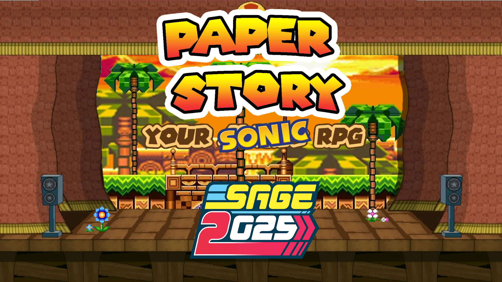
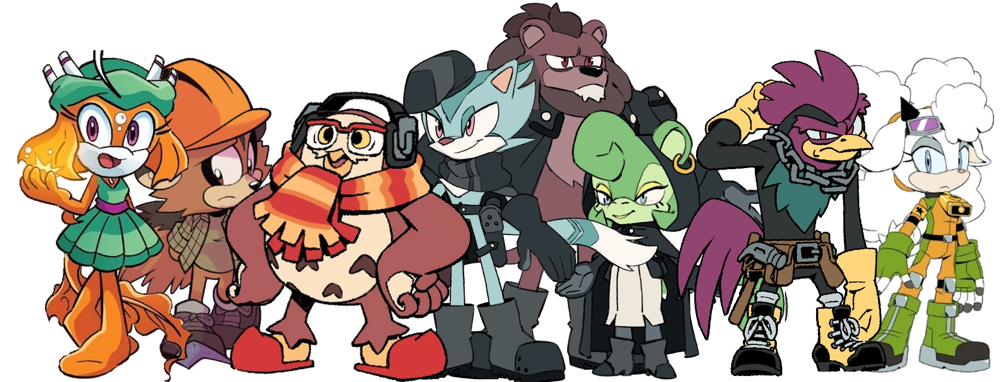
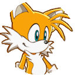
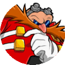
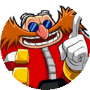
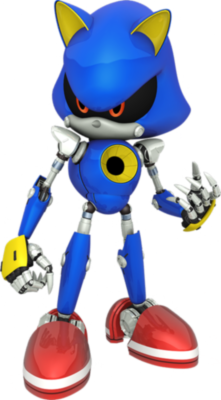
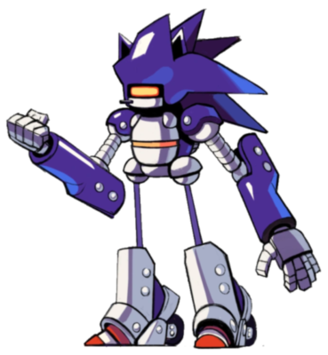

Paper Story @SAGE2025

Table of contents
As a way to celebrate trying to get Paper Story a booth for SAGE2025, the community has come together to create a small collection of Sonic-themed homebrew content for the game, including Species, new expanded Rules, and more!
While this content is not official, Deuce himself participated in a good chunk of it, and we can proudly present it to you all!
Species
As a way to encompass the wide variety of characters seen in the Sonic franchise, and offer a good framework for players to create OCs that fit the Sonic-style, we decided to create a unique "Mobian" species, with a number of options to customise them to your liking.
Mobian

Mobians are the most common inhabitants of Sonic's World, anthropomorphic animals with a variety of appearances and abilities. While most Mobians take from real-world mammals, they can also include birds, reptiles, and even aquatic creatures.
While not all Mobians are fighters by trade, their culture has for long been deeply intertwined with conflicts on a global scale, leading to a strong warrior ethos among many, and the courage to stand up against oppression.+1 Any Stat, +1 Courage
1 Power, 0 DefenseAt character creation, define the Mobian's specific animal type, as it will help determine their abilities and traits.
Pros
+ Athletics (Any)
Must be chosen at character creation. Examples include Brawn, Jump, Run…
+ Notice (Details)
or + Notice (Distant Vision)
or + Notice (Listen)
or + Notice (Scent)
+ Steady (VS Fear)
Up to 2 of the following:
1 Resist (Element)
This Element must be specified during character creation. This can be chosen twice with either the same or a different element.
Adapted (Any), Carrier, Fly, Hover or Resilient
Depending on what could makes sense for your character species.
The type of Adapted must be specified during character creation.Cons
Sinker
Unless the character has either Adapted (to some Water environment) or Fly.
Up to 2 of the following, and at least as much as you took Pros:
Weakness (Confuse, Provoke)
The Level and Duration of any of these Statuses inflicted on you is doubled.
Weakness (Noise)
The Level and Duration of all Statuses you suffer from sound-based sources is doubled.
Weakness (Scent)
The Level and Duration of all Statuses you suffer from scent-based sources is doubled.Tech Defaults
Aerial
Tool
Variant (Athletics)
+1 Custom SetCustom Sets are customisable Tech Defaults defined during character creation.
For Mobians, they can include any Traits totalling no more than 2 FP, but can't include negative Traits.Example Techniques
Weapon Strike (0 FP)
Attacks with a hand-held weapon.
Coordination: (Primary Check)
Auto: 1 DMG
Nice!: 2 DMG
Tool (Indirect)Dust Up (2 FP)
(Using Disorient as a Custom Set Tech Default)
Kicks sand in the enemy's face with speed and force, temporarily blinding them!
Athletics: (Secondary Check)
Nice!: Disorients (1) for 4 turns.
Good!: Disorients (2) for 4 turns.
Great!: Disorients (3) for 4 turns.
Wonderful!: Disorients (4) for 4 turns.
Variant (Athletics), Disorient x4, Harmless (Indirect), Situational (Common: Unusable without soil, sand, etc.)
Subspecies
Subspecies are means to further customise a character. A bunch of them are already available in the core rulebook, but we thought that Sonic deserved some unique ones around a specific theme.. Here comes Speed-Type-, Power-Type- and Fly-Type- Subspecies!
Speed-Type-
Speed-Type creatures have an affinity for speed that they can't control; in all avenues of life, they've just got to go fast, no matter the cost.
e.g. Sonic; Espio
[Type]
+1 Spirit, -1 Courage
Add
+ Athletics (Run)
+ Trickery (Dodge)
+ Steady (Balance)
Defense is reduced by 1
It also caps at 1 maximum.
Hover
If Fly is removed from the base species only.
Devotion (to Speed)
You cannot willingly use the Delayed Technique Traits in your Innate Techniques.Remove
Fly
Weakness (Air)Added Tech Defaults
Boost (Athletics)
Disorient
Hustle
+ Required: When Hustle is added as a Tech Default, add either Self or Split. Only the user can be targeted with Hustle.
Overrun
Swap x2Conditions
Can't be combined with another [Type] subspecies.
Power-Type-
Power-Type creatures are rougher than the rest of them, even the best of them; they're much stronger than they appear and are not to be messed with.
e.g. Knuckles; Vector
[Type]
-1 Spirit
+1 PowerAdd
+ Athletics (Brawn)
or + Bully (Brawn)
+ Coordination (Brawl)
+ Steady (Poise)
Carrier
Hover
If Fly is removed from the base species only.Remove
Fly
Weakness (Air, Earth, Crushing)Added Tech Defaults
Launch
Quake
Throw
Underfoot
Weaken (Defense)Conditions
Can't be combined with another [Type] subspecies.
Fly-Type-

Fly-Type creatures have conquered the skies, and are at home in the air. They can be a bit fragile on the ground, but they make up for it with their aerial prowess.
e.g. Tails; Rouge
-1 Heart, +1 Spirit
[Type]
Add
+ Aim (Bombard)
+ Athletics (Fly)
+ Trickery (Dodge)
+ Steady (Turbulance)
Carrier
HoverRemove
Weakness (Air)Added Tech Defaults
Aerial
Bestow (Fly)
Ranged
Secure (High Flying)Conditions
Can't be combined with another [Type] subspecies.
Final species must have Fly, Efficient (Flight) or + Magic (Flight).
You can always combine multiple Subspecies as long as you fit all the conditions to apply them, and the character's final Stats aren't reduced below 0. My Metal Sonic is a great example of this! He's a Speed-Type-, Metal- Mobian!

It can even make a big difference. Metal's sibling, Mecha Sonic Mark II is a Power-Type-, Mecha- Mobian. I even gave him a Specialization in GUNS!

Example Characters
Here are some example characters made using the Mobian species and Subspecies! They're made as Level 1 characters, and hopefully can inspire you.
Most of them also come as Google Sheets versions, so you can more easily copy them if you intend to use them.
Google Sheets
Metal Sonic

Character by @lucydndprincess
HP: 15 / 15
FP: 0 / 0
BP: 4 / 6
SP: 10 / 10
Level: 1Heart: 3
Spirit: 0
Courage: 2
Power: 1
Defense: 0Mobian (Speed-Type, Metal), Blue
Aim: 0
Athletics: 2 (Hover, Fly)
Coordination: 0
Guard: 2 (Melee)
Heal: 0Crafts: 0
Knowhow: 0
Magic: 0
Notice: 2 (Details, Tattling)
Trickery: 0Bully: 0
Cheer: 0
Perform: 0
Persuade: 0
Steady: 3 (VS Fear, Resilient)Immune (Fire, Water)
Your form softens, Weakening your Defense and Resist traits for a duration equal to the damage taken.
The Status Level begins at 1, and increases by 1 each time this is triggered, until the status is recovered from.
If your Defense and Resist traits are reduced to 0 by this status, treat this trait as Weakness (Fire, Water) for the duration instead.
Immune (Poison)
+2 Resist (Air, Blast, Earth, Ice)
Hover Resilient
Construct (Lifelike)
Weakness (Confuse, Provoke)
The Level and Duration of any of these Statuses inflicted on you is doubled.
Weakness (Shock)
You take on a Contact Trait, dealing Piercing Shock damage. The damage and duration are both equal to ½ the damage taken (minimum 1)
Devotion (to Speed)
You cannot willingly use the Delayed Technique Traits in your Innate Techniques.
SinkerTech Defaults
Variant (Athletics)
Boost (Defense) x2, Self
Secure (Metal Form)
Hustle
+ Required: When Hustle is added as a Tech Default, add either Self or Split. Only the user can be targeted with Hustle.Techniques
Ramping Speeds (0 FP)
Slam into your target, then build up speed for your next attack.
Athletics:
Good!: 2 DMG to the target
Athletics:
Nice!: Your are Hustled (1) for 1 turn.
Variant (Athletics), Split, Hustle, Commitment, Unwieldy, Situational (Common: SP can't be used to modify the Technique in any way)Black Shield (0 FP)
Protect yourself from all attacks.
Guard:
Good!: You become Secured and Immune to Fire, Shock and Water for 1 Turn.
Secure, Bestow x3, Harmless, Self, UnwieldyBadges
Peekaboo
BadgeSkills
• 2 BPOnce per turn, you can make a Notice check as a free action.
For each Grade of Success, you can find out how much HP one enemy has.
Mecha Sonic Mark II

Character by @lucydndprincess
HP: 15 / 15
FP: 5 / 5
BP: 0 / 0
SP: 10 / 10
Level: 1Heart: 3
Spirit: 1
Courage: 0
Power: 3
Defense: 0Mobian (Power-Type, Mecha), Blue
Aim: 1 (Guns)
Athletics: 3 (Brawn, Jump)
Coordination: 0
Guard: 0
Heal: 0Crafts: 0
Knowhow: 0
Magic: 0
Notice: 2 (Details, Tattling)
Trickery: 0Bully: 0
Cheer: 0
Perform: 0
Persuade: 0
Steady: 3 (VS Fear, Resilient)Immune (Charm, Fear, Poison, Provoke, Sleep)
+1 Resist (Air, Blast, Earth, Magic)
Hover Resilient
Construct
Weakness (Shock, Water)
You take +2 damage and become Confused (1) for a number of turns equal to the damage taken (minimum 1 turn).
SinkerTech Defaults
Aerial
Element (Blast)
+ Optional: Element (Blast) on Indirect or Ranged attacks. Element (Shock)
+ Optional: Element (Shock) on attacks. Tool (Built-In)Techniques
Spin Jump (0 FP)
Curl into a spiky ball in the air and slam into a target of your choice.
Athletics (Jump):
Nice!: 6 DMG to the target
Aerial, Indirect, CommitmentShock Dash (4 FP)
Coat yourself in electricity, rev up your wheels, and slam through your opponents.
Athletics:
Nice!: 6 Shock Damage to all enemies at your elevation.
Element (Shock), Variant (Athletics), Indirect, Overrun, Commitment
// Need more too
On Star Power
Star Power isn't necessarily applicable for a game taking place in Sonic's World, but there's an easy way to reflavour it!
The Star Element can simply become the Chaos Element, representing power similar to that of the Chaos Emeralds, or even the Emeralds themselves.
Star Power (SP) itself can easily be reflavored as Emerald Power (EP).
Every ability that would normally ask or fill Star Power can simply be changed to Emerald Power. It simply represents the inherent potential of every creature to manipulate Chaos Energy, even without the use of actual Chaos Emeralds, although they can certainly be used to reinforce the max Emerald Power of the group.
Emerald Power specific abilities
// Something about using the Chaos Emeralds to do cool stuff, maybe even Super Forms in some way.
Inventory
// New Items, Badges, Gear, etc.
Items
// New Items
Badges
// New Badges
(A Badge themed around the Spin Dash)
(A Badge themed around tanking with money, akin to losing Rings)
(A Badge encouraging Team attacks, maybe specifically with a Balanced Team of Speed-Type-, Power-Type- and Fly-Type- characters?)
(A Badge giving bonuses when being Carried, or for using a Carried character as a projectile for a Ranged Attack, like the Fly-Type- attacks in Sonic Heroes?)
(A Badge constantly powering you up with Emerald Power, forbidding you from sharing EP (in both ways), with big consequences if you can't pay the price at the beginning of the turn)